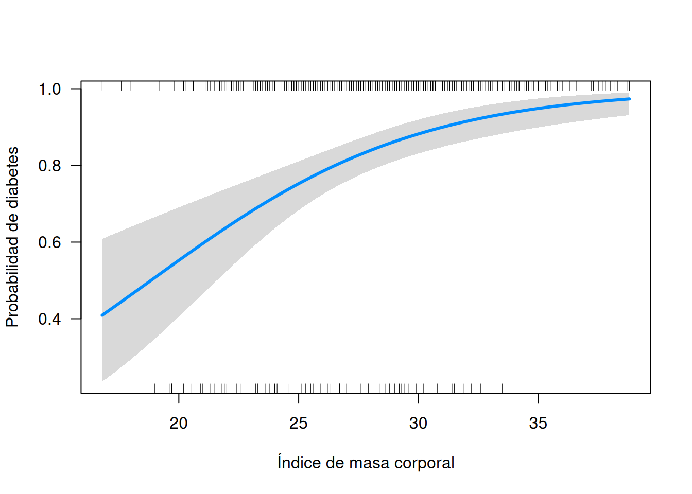
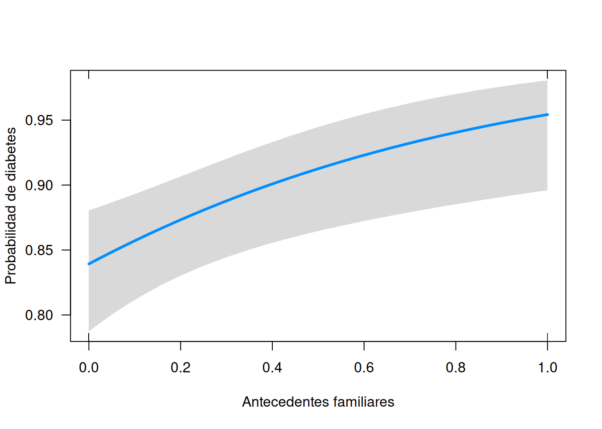

6.1 📖 Capítulo 1: Introducción a los Modelos Lineales Generalizados
Objetivos del capítulo:
Entender las limitaciones de la regresión lineal clásica
Conocer qué son los Modelos Lineales Generalizados (GLM)
Aprender por qué son esenciales en análisis médicos y sanitarios
Familiarizarse con la estructura básica de un GLM
¿Qué son los Modelos Lineales Generalizados?
Los Modelos Lineales Generalizados (GLM, por sus siglas en inglés) son una extensión de los modelos lineales tradicionales que permiten modelar variables respuesta que no se distribuyen normalmente.
Fueron introducidos por Nelder y Wedderburn en 1972 como una forma flexible de abordar muchos tipos de datos comunes en investigación, especialmente cuando:
La variable dependiente es binaria (sí/no, éxito/fracaso)
Es un conteo (número de hospitalizaciones, eventos adversos)
Es positiva y continua, pero no normal (gastos sanitarios, tiempo de recuperación)
Limitaciones de la regresión lineal en medicina
La regresión lineal clásica asume lo siguiente:
La variable respuesta sigue una distribución normal
La relación entre las variables independientes y la dependiente es lineal
Los residuos tienen varianza constante (homocedasticidad)
Sin embargo, estas condiciones rara vez se cumplen en muchos estudios médicos. Por ejemplo:
Ejemplo 1: Variable binaria – Éxito o fracaso quirúrgico
Imagina que estás analizando si un paciente tiene complicaciones tras una cirugía (sí = 1, no = 0). Si usas un modelo lineal:
Podrías predecir valores fuera del rango [0,1], lo cual no tiene sentido
El error tendría varianza distinta según el valor predicho → viola el supuesto de homocedasticidad
Ejemplo 2: Conteos – Número de reingresos hospitalarios
Si estás contando cuántas veces un paciente ha sido ingresado en el último año:
Estos datos suelen tener muchos ceros y pocos valores altos → cola derecha pesada
No pueden ser negativos → la normalidad no es adecuada
Usar una regresión lineal podría dar predicciones negativas
Ejemplo 3: Tiempo de recuperación – Variable positiva y sesgada
En lugar de usar una regresión lineal, que asume simetría, sería más apropiado usar una distribución como Gamma o log-normal
¿Por qué usar GLM en medicina?
Los GLM son una herramienta fundamental en investigación médica porque:
✅ Permiten trabajar con distintos tipos de variables
Binarias (logística)
De conteo (Poisson, binomial negativa)
Positivas continuas (Gamma)
✅ Ofrecen interpretaciones clínicas útiles
En logística: odds ratios
En Poisson: tasas relativas
En Gamma: relaciones multiplicativas en tiempos o costes
✅ Mejoran la precisión al respetar la naturaleza de los datos
No forzan una distribución normal donde no existe, mejorando la validez estadística de los resultados
✅ Son fáciles de implementar en R
Con funciones básicas como glm() y paquetes adicionales como broom, effects o visreg, podemos construir, visualizar e interpretar modelos rápidamente
Caso práctico introductorio: Predicción de bajo peso al nacer
Para ilustrar cómo pueden aplicarse los GLM en medicina, vamos a usar el conjunto de datos birthwt del paquete MASS. Este dataset contiene información sobre 189 embarazos y si el bebé nació con bajo peso (< 2500 gramos).
Algunas variables relevantes: - low: 1 si el bebé nació con bajo peso, 0 en caso contrario - age: edad de la madre - lwt: peso en la última menstruación - smoke: si la madre fumaba durante el embarazo - ptl: número de partos prematuros previos - ht: hipertensión arterial - ui: irritabilidad uterina
Este tipo de problema requiere un modelo logístico, ya que la variable dependiente es binaria. Veremos cómo construirlo y cómo interpretarlo en el próximo capítulo.
6.2 📘 Capítulo 2: Conceptos básicos de los Modelos Lineales Generalizados (GLM)
6.2.1 Objetivos del capítulo:
Comprender qué es un modelo lineal generalizado
Distinguir entre regresión lineal y GLM
Conocer los tres componentes principales de un GLM
Entender las funciones de distribución y enlace más usadas
Saber cómo elegir el modelo adecuado según el tipo de variable
6.2.2 ¿Qué es un Modelo Lineal Generalizado?
Un Modelo Lineal Generalizado (GLM) es una extensión de los modelos lineales clásicos que permite modelar variables respuesta que no siguen una distribución normal.
A diferencia de la regresión lineal tradicional, los GLM permiten:
Modelar variables dependientes no normales: binarias, conteos, positivas continuas…
Usar una función de enlace para relacionar la media de la variable respuesta con una combinación lineal de predictores
Trabajar sin asumir homocedasticidad ni normalidad de errores
En resumen, son ideales para muchas situaciones comunes en investigación médica.
6.2.3 Los tres componentes de un GLM
Un GLM se define por tres elementos fundamentales:
1. Función de distribución
Es la distribución estadística de la variable respuesta. Algunas distribuciones comunes son:
Distribución
Tipo de variable
Binomial
Variable binaria (sí/no)
Poisson
Conteos
Gamma
Variables positivas continuas
Gama inversa
Tiempos hasta un evento
Binomial negativa
Conteos con sobredispersión
2. Función de enlace
Es la relación matemática entre la media de la variable respuesta (\(\mu\)) y la combinación lineal de predictores (\(\eta\)).
💡 Ejemplo: En la regresión logística, la función de enlace es el logit, que transforma probabilidades en valores reales.
3. Componente sistemático
Es la parte lineal del modelo, formada por la combinación de las variables independientes.
\[ \eta = X \beta \]
Donde \(X\) es la matriz de diseño (variables independientes) y \(\beta\) son los coeficientes estimados.
Tipos de GLM según la variable dependiente
Dependiendo del tipo de variable que queramos modelar, utilizaremos distintas combinaciones de distribución y función de enlace:
6.2.4 🔹 Regresión logística (variable binaria)
Distribución: Binomial
Función de enlace: Logit
Ejemplo médico: predecir si un paciente desarrollará diabetes (sí/no)
set.seed(123) # Para reproducibilidadn <-500datos_medicos <-data.frame(edad =round(rnorm(n, mean =55, sd =10)),imc =round(rnorm(n, mean =28, sd =4), 1),presion =round(rnorm(n, mean =130, sd =15)),colesterol =round(rnorm(n, mean =200, sd =40)),fumador =rbinom(n, 1, 0.3),familia_diab =rbinom(n, 1, 0.25))# Calculamos el logaritmo de las oddslog_odds <-with(datos_medicos,-6+0.05* edad +0.1* imc +0.02* presion +0.01* colesterol +0.8* fumador +1.2* familia_diab)# Convertimos a probabilidades con la función logísticaprob_diabetes <-plogis(log_odds)prob_diabetes <- (prob_diabetes -min(prob_diabetes)) / (max(prob_diabetes) -min(prob_diabetes))# Generamos la variable binaria finaldatos_medicos$diabetes <-rbinom(n, 1, prob_diabetes)modelo_logistico <-glm(diabetes ~ edad + imc + fumador,data = datos_medicos, family =binomial(link ="logit"))
🔹 Regresión de Poisson (conteos)
Distribución: Poisson
Función de enlace: Log
Ejemplo médico: número de hospitalizaciones en un año
set.seed(456) # Para reproducibilidadn <-300datos_hosp <-data.frame(edad =round(rnorm(n, mean =65, sd =10)),enfermedad =sample(c("HTA", "Diabetes", "EPOC"), n, replace =TRUE),bmi =round(rnorm(n, mean =28, sd =4), 1),fumador =rbinom(n, 1, 0.3),tiempo_enfermedad =round(runif(n, min =1, max =15), 1))# Calculamos el lambda (tasa media de hospitalización) usando un modelo log-lineallambda <-exp(-2+0.03* datos_hosp$edad +ifelse(datos_hosp$enfermedad =="Diabetes", 0.4,ifelse(datos_hosp$enfermedad =="EPOC", 0.7, 0)) +0.02* datos_hosp$bmi +0.5* datos_hosp$fumador +0.05* datos_hosp$tiempo_enfermedad)# Generamos el número de hospitalizaciones usando una distribución Poissondatos_hosp$hospitalizaciones <-rpois(n, lambda = lambda)modelo_poisson <-glm(hospitalizaciones ~ edad + enfermedad,data = datos_hosp, family =poisson())
🔹 Regresión Gamma (variables positivas continuas)
Distribución: Gamma
Función de enlace: Inversa o log
Ejemplo médico: tiempo de recuperación tras cirugía
set.seed(789) # Para reproducibilidadn <-400datos_cirugia <-data.frame(edad =round(rnorm(n, mean =60, sd =12)),tratamiento =sample(c("A", "B", "C"), n, replace =TRUE),complicaciones =rbinom(n, 1, 0.25),duracion_cirugia =round(runif(n, min =30, max =180)),imc =round(rnorm(n, mean =27, sd =4), 1))# Simulamos el tiempo de recuperación usando un modelo log-lineallog_tiempo_medio <-3+0.01* datos_cirugia$edad +ifelse(datos_cirugia$tratamiento =="B", 0.2,ifelse(datos_cirugia$tratamiento =="C", 0.4, 0)) +0.5* datos_cirugia$complicaciones +0.005* datos_cirugia$duracion_cirugia +0.02* datos_cirugia$imc# Generamos tiempos de recuperación con una distribución log-normaldatos_cirugia$tiempo_recuperacion <-round(rlnorm(n, meanlog = log_tiempo_medio, sdlog =0.3), 1)modelo_gamma <-glm(tiempo_recuperacion ~ edad + tratamiento,data = datos_cirugia, family =Gamma(link ="inverse"))
🔹 Regresión lineal (caso especial de GLM)
Distribución: Normal
Función de enlace: Identidad
Ejemplo médico: nivel de colesterol en sangre
set.seed(987) # Para reproducibilidadn <-600datos_cardio <-data.frame(edad =round(rnorm(n, mean =50, sd =10)),sexo =sample(c("Hombre", "Mujer"), n, replace =TRUE),peso =round(rnorm(n, mean =70, sd =12), 1),altura =round(runif(n, min =1.50, max =1.90), 2))# Calculamos el IMCdatos_cardio$imc <- datos_cardio$peso / (datos_cardio$altura)^2# Variables adicionalesdatos_cardio$dieta <-rbinom(n, 1, prob =ifelse(datos_cardio$sexo =="Mujer", 0.4, 0.3))datos_cardio$ejercicio <-round(runif(n, min =0, max =10), 1)# Simulamos el nivel de colesterol usando un modelo linealcolesterol_base <-200+0.3* datos_cardio$edad +ifelse(datos_cardio$sexo =="Hombre", 10, 0) +1.2* datos_cardio$imc +-5* datos_cardio$dieta +-0.4* datos_cardio$ejercicio# Añadimos variabilidad aleatoriadatos_cardio$colesterol <-round(colesterol_base +rnorm(n, sd =15), 0)modelo_normal <-glm(colesterol ~ dieta + ejercicio,data = datos_cardio, family =gaussian())
6.2.5 Elección del modelo correcto
Para elegir el GLM adecuado, debes considerar:
¿Qué tipo de variable es la respuesta?
Binaria → logística
Conteo → Poisson o binomial negativa
Positiva continua → Gamma
Proporciones → Beta (fuera de GLM básico, pero hay extensiones)
¿Hay sobredispersión?
Si la varianza es mayor que la media en conteos → usa binomial negativa
¿Necesito interpretar resultados clínicos?
Odds ratios, tasas relativas… todo esto lo obtienes fácilmente al exponentiar los coeficientes
Ejemplo práctico: elección del modelo en medicina
Imagina que trabajas con un dataset sobre pacientes operados y quieres estudiar cuánto tardan en recuperarse.
Tienes estas variables:
tiempo_recuperacion: días desde la operación hasta alta hospitalaria
edad: años
tratamiento: tipo de intervención (A, B, C)
complicaciones: sí/no
Podríamos usar un GLM Gamma con enlace logarítmico:
set.seed(1234) # Para reproducibilidadn <-350datos_operados <-data.frame(edad =round(rnorm(n, mean =60, sd =10)),tratamiento =sample(c("A", "B", "C"), n, replace =TRUE),complicaciones =rbinom(n, 1, 0.2),duracion_cirugia =round(runif(n, min =30, max =180)),imc =round(rnorm(n, mean =27, sd =4), 1))# Simulamos el tiempo de recuperación usando un modelo log-lineallog_tiempo_medio <-3+0.01* datos_operados$edad +ifelse(datos_operados$tratamiento =="B", 0.2,ifelse(datos_operados$tratamiento =="C", 0.4, 0)) +0.5* datos_operados$complicaciones +0.005* datos_operados$duracion_cirugia +0.02* datos_operados$imc# Generamos tiempos de recuperación con una distribución log-normaldatos_operados$tiempo_recuperacion <-round(rlnorm(n, meanlog = log_tiempo_medio, sdlog =0.3), 1)modelo_recuperacion <-glm(tiempo_recuperacion ~ edad + tratamiento + complicaciones,data = datos_operados, family =Gamma(link ="log"))summary(modelo_recuperacion)
Call:
glm(formula = tiempo_recuperacion ~ edad + tratamiento + complicaciones,
family = Gamma(link = "log"), data = datos_operados)
Coefficients:
Estimate Std. Error t value Pr(>|t|)
(Intercept) 4.248493 0.132173 32.143 < 2e-16 ***
edad 0.007516 0.002077 3.619 0.00034 ***
tratamientoB 0.228853 0.051474 4.446 1.18e-05 ***
tratamientoC 0.416758 0.048329 8.623 2.40e-16 ***
complicaciones 0.516802 0.050872 10.159 < 2e-16 ***
---
Signif. codes: 0 '***' 0.001 '**' 0.01 '*' 0.05 '.' 0.1 ' ' 1
(Dispersion parameter for Gamma family taken to be 0.1445412)
Null deviance: 75.286 on 349 degrees of freedom
Residual deviance: 47.806 on 345 degrees of freedom
AIC: 3784.7
Number of Fisher Scoring iterations: 5
Este modelo respeta la naturaleza positiva y sesgada del tiempo de recuperación, y nos permite interpretar los efectos como factores multiplicativos del tiempo medio de recuperación.
6.2.6 Interpretación de los coeficientes
Los coeficientes de un GLM se interpretan en escala del predictor lineal, pero al aplicar la función de enlace inversa, podemos obtener predicciones en la escala original de la variable respuesta.
Por ejemplo, en un modelo logístico:
exp(coef(modelo_logistico)["fumador"])
fumador
3.128824
Nos daría el odds ratio asociado al hábito tabáquico, algo muy común en estudios médicos.
6.2.7 Diagnóstico básico de modelos
Aunque veremos diagnósticos más avanzados en capítulos posteriores, aquí tienes algunas herramientas útiles:
# Resumen del modelosummary(modelo_recuperacion)
Call:
glm(formula = tiempo_recuperacion ~ edad + tratamiento + complicaciones,
family = Gamma(link = "log"), data = datos_operados)
Coefficients:
Estimate Std. Error t value Pr(>|t|)
(Intercept) 4.248493 0.132173 32.143 < 2e-16 ***
edad 0.007516 0.002077 3.619 0.00034 ***
tratamientoB 0.228853 0.051474 4.446 1.18e-05 ***
tratamientoC 0.416758 0.048329 8.623 2.40e-16 ***
complicaciones 0.516802 0.050872 10.159 < 2e-16 ***
---
Signif. codes: 0 '***' 0.001 '**' 0.01 '*' 0.05 '.' 0.1 ' ' 1
(Dispersion parameter for Gamma family taken to be 0.1445412)
Null deviance: 75.286 on 349 degrees of freedom
Residual deviance: 47.806 on 345 degrees of freedom
AIC: 3784.7
Number of Fisher Scoring iterations: 5
# Coeficientes exponentiados (útil para logit y log)library(broom)tidy(modelo_logistico, exponentiate =TRUE, conf.int =TRUE)
Entender qué es la regresión logística y cuándo usarla
Aprender a construir un modelo logístico en R
Interpretar los coeficientes como odds ratios
Evaluar el ajuste del modelo (AUC, curva ROC, matriz de confusión)
Visualizar efectos de las variables predictoras
¿Qué es la regresión logística?
La regresión logística es un tipo de Modelo Lineal Generalizado (GLM) utilizado cuando la variable dependiente es binaria, es decir, tiene dos posibles resultados:
Éxito / Fracaso
Presencia / Ausencia
Sí / No
Enfermo / Sano
En lugar de predecir directamente el valor de la variable respuesta, la regresión logística predice la probabilidad de que ocurra un evento.
La relación entre las variables independientes y la probabilidad se modela mediante la función logit:
Donde \(p\) es la probabilidad de que ocurra el evento.
Ejemplo médico: Predicción de riesgo de diabetes
Usaremos el dataset simulado datos_medicos, que contiene información de 500 pacientes y una variable binaria diabetes que indica si tienen o no diabetes.
Construcción del modelo logístico
Vamos a construir un modelo para predecir la probabilidad de tener diabetes en función de la edad, IMC, si fuma y si hay antecedentes familiares.
Confusion Matrix and Statistics
Reference
Prediction 0 1
0 5 0
1 59 436
Accuracy : 0.882
95% CI : (0.8504, 0.9089)
No Information Rate : 0.872
P-Value [Acc > NIR] : 0.277
Kappa : 0.1288
Mcnemar's Test P-Value : 4.321e-14
Sensitivity : 0.07812
Specificity : 1.00000
Pos Pred Value : 1.00000
Neg Pred Value : 0.88081
Prevalence : 0.12800
Detection Rate : 0.01000
Detection Prevalence : 0.01000
Balanced Accuracy : 0.53906
'Positive' Class : 0
Visualización de efectos
Usando visreg:
library(visreg)visreg(modelo_logistico, "imc", scale ="response",xlab ="Índice de masa corporal", ylab ="Probabilidad de diabetes")

Efecto de antecedentes familiares:
visreg(modelo_logistico, "familia_diab", scale ="response",xlab ="Antecedentes familiares", ylab ="Probabilidad de diabetes")

Conclusión
La regresión logística es una herramienta fundamental en investigación médica para modelar variables binarias. Permite:
Predecir riesgos (ej. desarrollo de enfermedades)
Calcular odds ratios fácilmente
Validar modelos con métricas clínicas relevantes (AUC, sensibilidad, especificidad)
Visualizar efectos de forma intuitiva
6.4 📘 Capítulo 4: Regresión de Poisson y binomial negativa en medicina
Objetivos del capítulo:
Entender qué es un modelo de conteo y cuándo usarlo
Aprender a construir modelos de Poisson y binomial negativa en R
Detectar y manejar la sobredispersión
Interpretar los coeficientes como tasas relativas
Validar y visualizar resultados clínicos relevantes
6.4.1 ¿Qué es la regresión de Poisson?
La regresión de Poisson es un tipo de Modelo Lineal Generalizado (GLM) usado cuando la variable dependiente representa conteos, es decir, valores enteros no negativos:
Número de hospitalizaciones en un año
Número de recaídas
Número de eventos adversos
Número de infecciones
Este modelo asume que la media y la varianza son iguales, lo cual no siempre ocurre en la práctica médica.
Ejemplo médico: Número de hospitalizaciones
Usaremos el dataset simulado datos_hosp, que contiene información de 300 pacientes y una variable hospitalizaciones que indica cuántas veces han sido hospitalizados en el último año.
Construcción del modelo de Poisson
Vamos a construir un modelo para predecir el número de hospitalizaciones en función de la edad, enfermedad, IMC, si fuma y el tiempo desde el diagnóstico.
Un punto adicional de IMC multiplica la tasa de hospitalización por 1.02.
Ser fumador multiplica la tasa de hospitalización por 1.68.
Tener EPOC multiplica la tasa por 2.00 respecto a tener HTA.
Diagnóstico: ¿Hay sobredispersión?
Un supuesto importante de la regresión de Poisson es que la varianza sea igual a la media. En muchos casos médicos esto no se cumple → sobredispersión.
Comprobación rápida:
if (var(datos_hosp$hospitalizaciones) >mean(datos_hosp$hospitalizaciones)) {print("Advertencia: Sobredispersión detectada.")}
[1] "Advertencia: Sobredispersión detectada."
También puedes calcular el cociente:
phi <-sum(residuals(modelo_poisson, type ="pearson")^2) /df.residual(modelo_poisson)print(paste("Índice de dispersión:", phi))
[1] "Índice de dispersión: 0.800588043062644"
Si phi > 1.5, hay sobredispersión significativa.
Alternativa: Regresión binomial negativa
Cuando hay sobredispersión, se puede usar la regresión binomial negativa, que permite que la varianza sea mayor que la media.